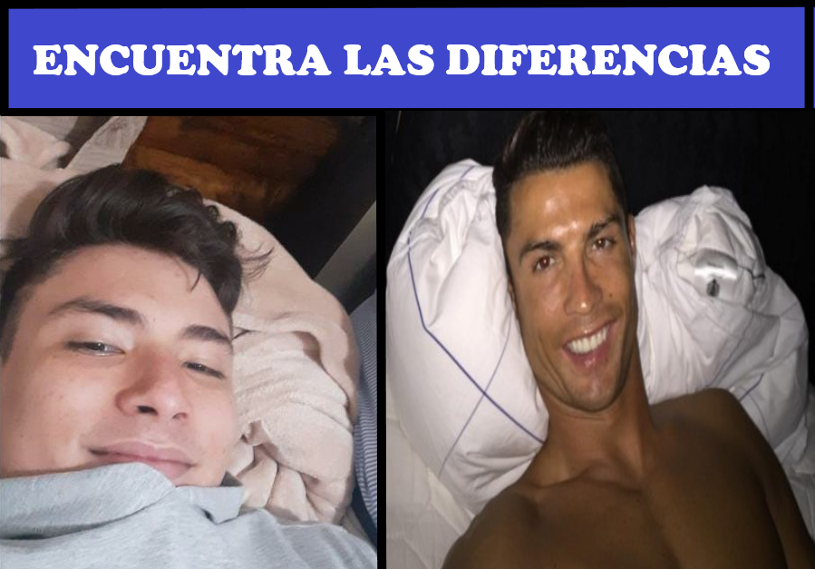

Acerca de tero
Tero es fabuloso, él es un tipo capaz de conquistar a casi cualquier mujer, sin embargo no es un perro hijueputa como algunos dirían
Tero y su amigo del alma
Características de Tero
- El tiene manos grandes
- Lo tratan como pendejo (A veces)
- Intenta ser un buen tipo con las mujeres pero cada vez se vuelve más misógino
Amigos de Tero
Tero tiene muchos amigos, creo que su amigo favorito es Teban, aunque quiere mucho a Bitbai. Revisa los links de abajo para saber más sobre ellos